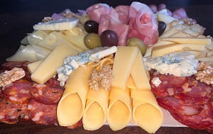

Tabla Clásica
Una versión accesible para que no dejes de darte gusto con una rica picada.
Con los fiambres y quesos más clásicos de nuestro país, desde un suave jamón cocido hasta un infalible pategrás,
si querés una picadad simple pero rica y abundante pedila.
Esta tabla no falla.


Todas nuestras tablas vienen acompañadas con pan para todos los comensales y dips para que tu experiencia sea completamente satisfactoria
¡PICAR!
Tabla Especial
Esta versión completa, con todo lo que esperás encontrar en una picada, deleitate con nuestro jamón crudo y nuestros salames artesanales,
te vas a maravillar con nuestro queso gorgonzola, suave y cremoso.
Todas nuestras tablas vienen acompañadas con pan para todos los comensales y
dips para que tu experiencia sea completamente satisfactoria
¡PICAR!

Tabla Don Fermín
Si sos exigente con la categoría de los productos para tu picada esta es la versión más completa,
con quesos bra, de origen italiano, en sus variantes con pimienta y ahumado, acompañado de un fontina de tandil,
un pategrás muy suave y los infaltables salames artesanales que nos caracterizan entre otros.
Todas nuestras tablas vienen acompañadas con pan para
todos los comensales y dips para que tu experiencia sea completamente satisfactoria
¡PICAR!